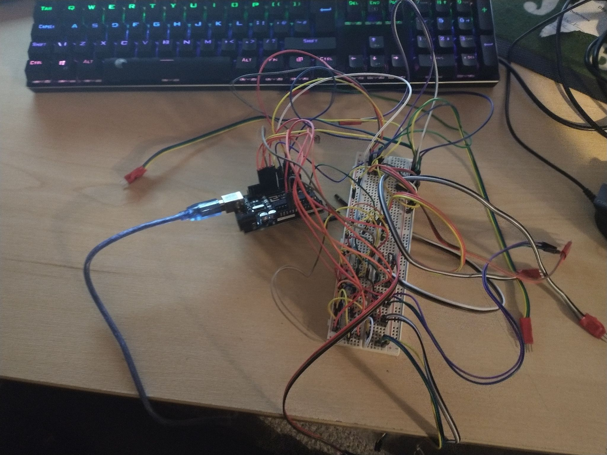
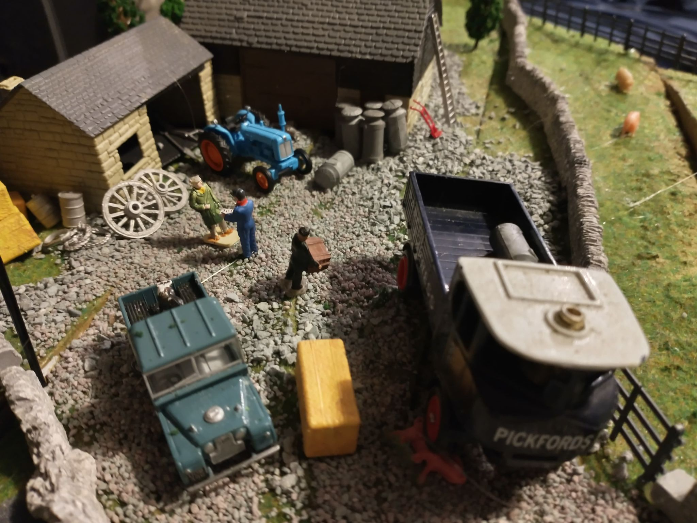
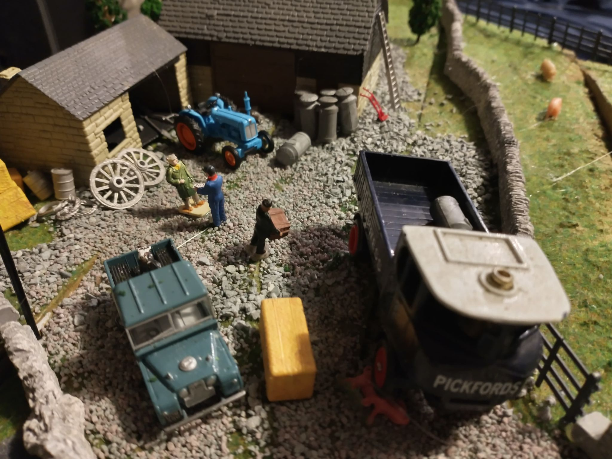

| About The Project |
| Toy town, much like many things this year, whether it be a bad haircut, a DIY mask or a questionable fashion choice to the morning meetings, was caused by the UK wide lockdown. Me and my older brother found ourselves at a loss as what to do with our time. So we decided to break out dads old model train set, while it perhaps isn’t a hobby of mine to watch little plastic trains go round a track it is my idea of fun seeing what I can add to it in terms of electronics and computerised functions. So, we set to work building a hill, painting everything and laying the track ready for toy towns big unveiling. All worked as planned. We were happy with the trains as they were but I decided that now my brother had had his fun it was my turn, I broke out my old Arduino and decided to make the points controlled by a little program I wrote, the switches used a pull up resistor to determine the position of the switch and moved a servo mounted under the table to the open or closed position. This meant we could control the whole layout from one central position and did not need to move to switch points over. After this success I did get a little carried away and decided to fit signals which changed colour when a train passed, noises when the train pulled into the station and a whistle noise when it entered the tunnel. I also decided to light the streets and pubs of toy town on a day night cycle. As I said this was not really a serious project more of an experiment to play with some toys and electronics while we could not leave the house. |
| How it Works |

The whole layout is controlled by an Arduino uno. It uses pull up resistors on all the switches to determine the position of the switch which in turn controls the position of the points on the track. The Arduino also controls the lights on the layout and the sounds. The sounds under the tunnel are produced by a distance sensor triggering when a train passes close to it and sets the sound off, this is very similar to the distance sensor in the station which again makes a sound depending on if the train goes past or is it stop, it does this by timing how long it is in the station. Much like everything else, the LEDs are also controlled by the Arduino however these are just on a timer which turns them on and off every 5 minutes.
|
| Pictures |


 



|